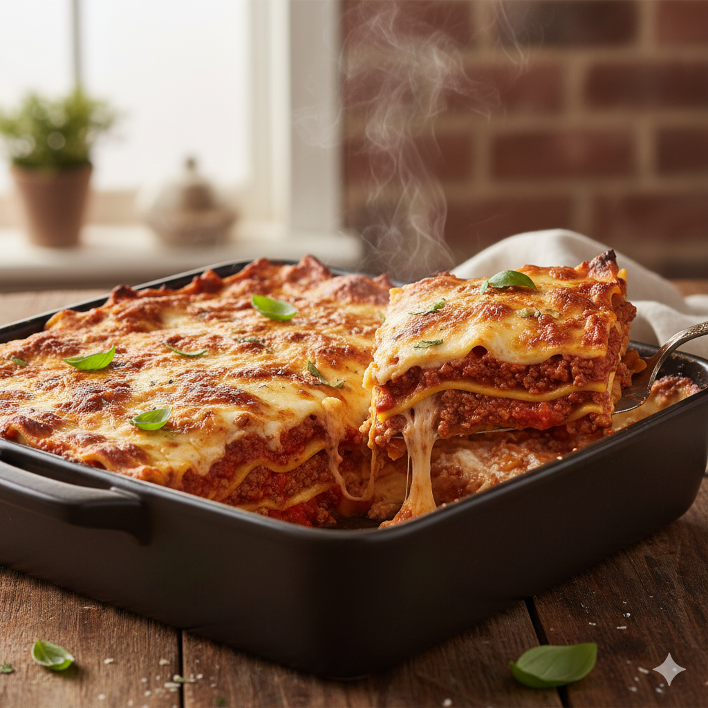
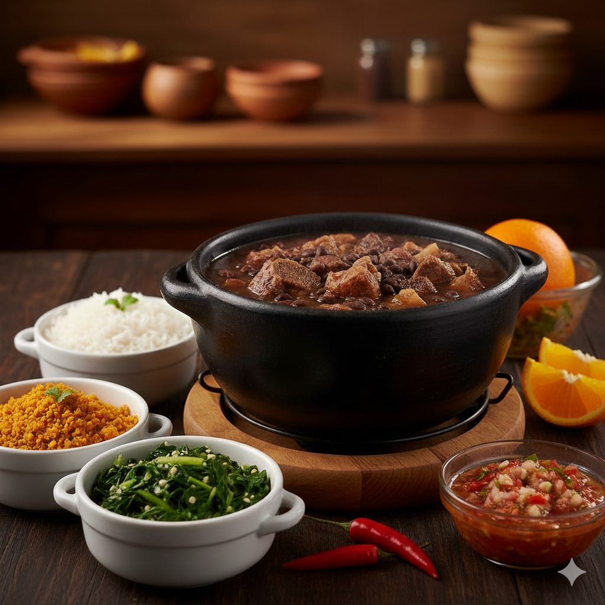

Sabores de uma Vida
O Livro de Receitas da Família Barbosa
Organizado por Ygor Eduardo

Sumário
Clique nos títulos para ir direto à receita.
1. Lasanha à Bolonhesa Clássica
Um prato clássico italiano, perfeito para reunir a família. Nossa receita tradicional utiliza molho de carne moída bem apurado.
1. Lasanha à Bolonhesa Clássica
Ingredientes:
- 500g de massa fresca para lasanha
- 1kg de carne moída
- 2 latas de tomate pelado ou 500g de molho de tomate
- 1 cebola grande picada, 2 dentes de alho amassados
- 1/2 xícara de vinho tinto seco (opcional)
- 1 copo de requeijão cremoso
- 200g de queijo muçarela fatiado
- 100g de queijo parmesão ralado
- Azeite, sal, pimenta do reino, orégano e manjericão a gosto
1. Lasanha à Bolonhesa Clássica
Modo de Preparo:
- Em uma panela grande, refogue a cebola e o alho no azeite.
- Adicione a carne moída e refogue até dourar. Tempere com sal e pimenta.
- Acrescente o vinho (se usar) e deixe evaporar. Adicione o tomate pelado amassado ou o molho.
- Cozinhe em fogo baixo por pelo menos 30 minutos, adicionando um pouco de água se necessário. Acerte o sal e a pimenta, e adicione orégano e manjericão.
- Em um refratário, intercale camadas de molho, massa, requeijão e muçarela.
- Finalize com uma camada de molho e polvilhe generosamente com parmesão ralado.
- Leve ao forno pré-aquecido a 180°C por cerca de 25-30 minutos, ou até borbulhar e o queijo dourar.
- Deixe descansar por 10 minutos antes de servir.
2. Bolo de Cenoura com Cobertura

Um bolo úmido e fofo, com a doçura da cenoura e o toque irresistível da cobertura de brigadeiro mole. O favorito da criançada!
2. Bolo de Cenoura com Cobertura
Ingredientes:
- 3 cenouras médias picadas
- 4 ovos grandes
- 1 xícara de óleo vegetal
- 2 xícaras de açúcar
- 2 xícaras de farinha de trigo
- 1 colher de sopa de fermento em pó
- **Cobertura:** 1 lata de leite condensado, 1/2 xícara de chocolate em pó, 1 colher de sopa de manteiga.
2. Bolo de Cenoura com Cobertura
Modo de Preparo:
- No liquidificador, bata as cenouras, ovos e óleo até obter uma mistura homogênea.
- Em uma tigela separada, misture o açúcar, a farinha e o fermento.
- Despeje a mistura do liquidificador sobre os ingredientes secos e misture delicadamente até incorporar.
- Despeje a massa em uma forma untada e enfarinhada (24cm de diâmetro).
- Asse em forno pré-aquecido a 180°C por cerca de 35-40 minutos, ou até dourar e passar no teste do palito.
- **Para a cobertura:** Misture todos os ingredientes em uma panela e leve ao fogo baixo, mexendo sempre, até desgrudar do fundo. Despeje sobre o bolo ainda quente.
3. Feijoada Completa da Vovó
A receita mais importante do livro! Uma feijoada completa, rica em carnes e com aquele caldo grosso, cozida lentamente para realçar todos os sabores.
3. Feijoada Completa da Vovó
Ingredientes:
- 500g de feijão preto
- 200g de carne seca dessalgada
- 150g de costelinha de porco salgada
- 100g de linguiça calabresa, 100g de paio
- Bacon, cebola, alho, louro, pimenta dedo-de-moça (opcional)
- Acompanhamentos: arroz branco, farofa, couve refogada, laranja.
3. Feijoada Completa da Vovó
Modo de Preparo:
- Deixe as carnes salgadas de molho na véspera, trocando a água várias vezes para dessalgar. Cozinhe-as na panela de pressão separadamente até ficarem macias e pique.
- Cozinhe o feijão preto na panela de pressão até ficar macio (cerca de 30-40 minutos após pegar pressão).
- Em uma panela grande, frite o bacon até ficar crocante. Retire o bacon e reserve a gordura.
- Na mesma panela, refogue a cebola e o alho na gordura do bacon.
- Adicione as carnes cozidas e picadas, as linguiças e refogue.
- Junte o feijão cozido (com o caldo) às carnes. Adicione as folhas de louro e, se desejar, pimenta.
- Cozinhe em fogo baixo por cerca de 20-30 minutos, mexendo ocasionalmente para engrossar o caldo.
- Sirva com arroz branco, farofa, couve refogada e fatias de laranja.
4. Pão de Queijo da Bisavó

Você encontrou o segredo! A receita original mineira, crocante por fora e elástica por dentro. Um tesouro guardado a sete chaves.
4. Pão de Queijo da Bisavó
Ingredientes Secretos:
- 500g de polvilho azedo
- 1 copo (americano) de água
- 1 copo (americano) de leite
- 1/2 xícara de óleo
- 2 ovos grandes
- 100g de queijo parmesão ralado
- 300g de queijo meia cura ralado grosso
- 1 colher (sopa) rasa de sal
4. Pão de Queijo da Bisavó
O Ritual de Preparo:
- Em uma panela, ferva a água, o leite, o óleo e o sal.
- Escalde o polvilho: despeje o líquido fervente sobre o polvilho em uma tigela e misture bem. Deixe esfriar.
- Quando a massa estiver morna, adicione os ovos um a um, amassando bem com as mãos.
- Adicione os queijos e continue sovando até a massa soltar das mãos (ela fica pegajosa, mas firme).
- Unte as mãos com óleo, faça bolinhas e coloque em assadeira (não precisa untar a forma).
- Leve ao forno pré-aquecido a 200°C por cerca de 25 a 30 minutos ou até dourar.
Fim das Receitas
Esperamos que este livro de receitas traga muitos momentos felizes à sua cozinha!
Selecione "Anterior" para voltar à última receita.